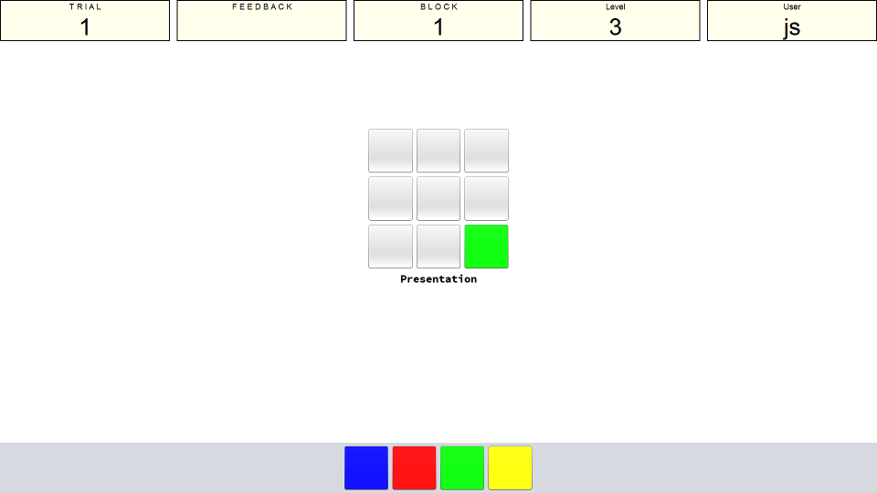
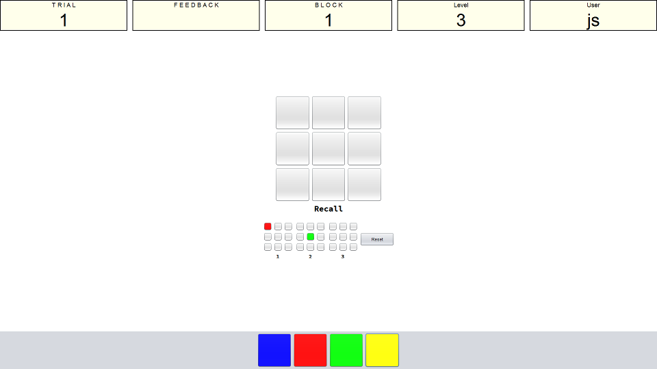

Instructions
Presentation Phase
You will see a 3x3 grid in the center of the screen that comprises 9 squares. The squares will begin to light up (in a sequence) and you will need to remember the order in which they do so. However, when a square lights up it may light up in one of four different colours and you must also remember the colour of each square. The first image below shows you what the screen will look like during the presentation phase.

The number of squares that light up depends on the level you have reached. The level will adjust based on your performance, if you do well then it will increase, if you struggle then it will decrease. The level determines how many colour-location combinations are presented in a trial for you to recall.
Recall Phase
When asked for your response you are presented with the 3x3 grid and also four boxes of different colours at the bottom of the screen. To give your response you first click the colour that you think was presented followed by the grid you think changed to this colour. You do this for as many squares as the level you are on. As you are entering your response there is a mini-grid for each serial position that will light up to match your response at each serial position.

If you make a mistake and want to change your answer you can press the reset button to start the response input again.